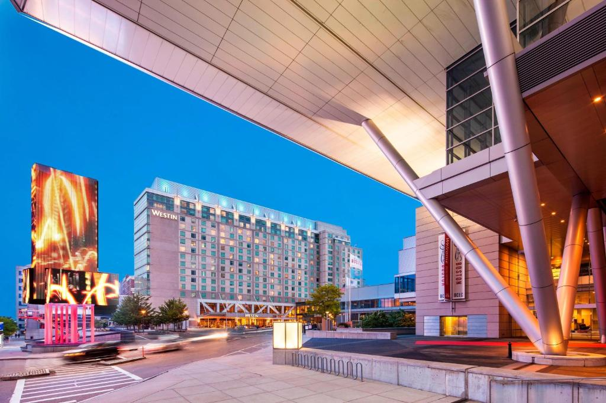
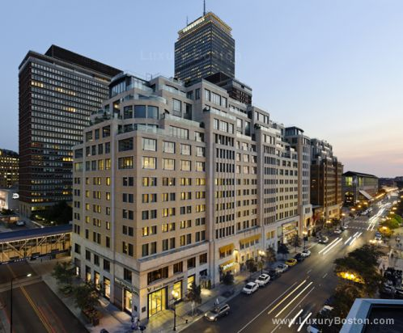
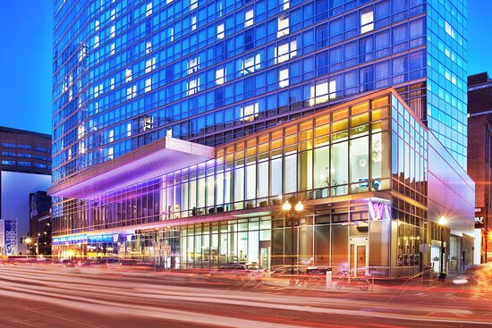

A look at some of the nicest hotels Boston has to offer

The Westin
Located in the Beautiful Seaport District, known for its fancy bars, and breathtaking views, The Westin is prime real estate for any person visiting Boston for business or pleasure.
Mandarin Oriental Boston
The Mandarin Oriental nestled amongst the business and buildings of bustling boylston, is one of Bostons best and most advantageously situated hotels, giving you easy access to some of Bostons greatest attractions.


W Boston
W Boston is a hotel located in the heart of Bostons financial district, with easy access to some of Boston's best bars and night clubs. The W offers a great base of operations for explore Boston's Night Life.